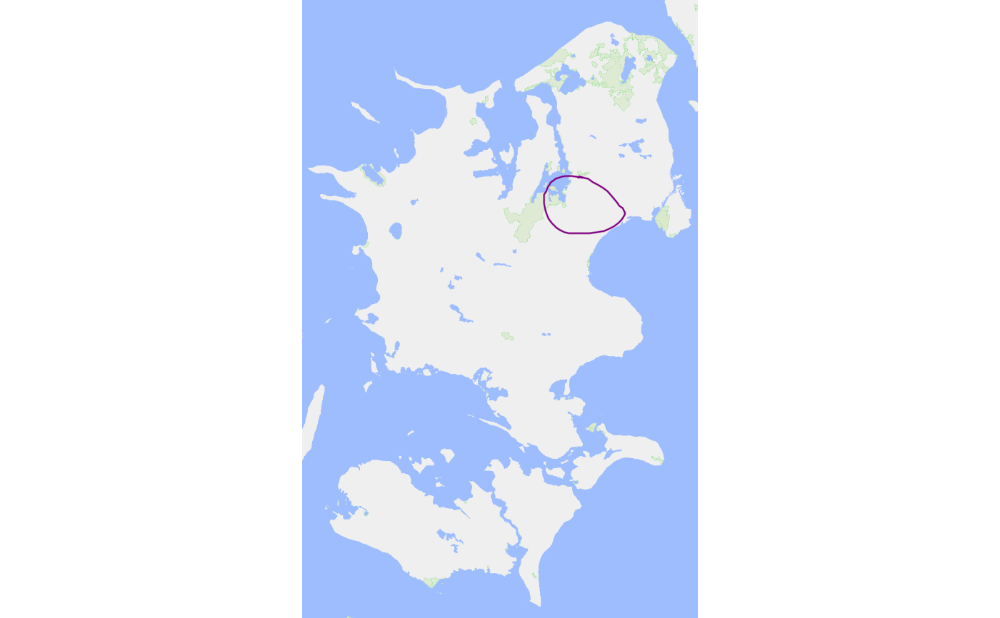

Reads JSON files generated by the RedCap PainDraw module and converts
them into a pdr_tibble (see pdr_match() for the terminology).
Value
A pdr_tibble (see pdr_match()) with one row per successfully
file in files and columns pdr_data (a pdr_list of pdr_drawings) and
id (copied from .id). Files that could not be read give an empty
list() in pdr_data and NA in id. On invalid files input, an empty list().
Details
Each input file is expected to contain a single pain drawing. Multiple files can be provided and will be combined row-wise.
Expected JSON structure
The input JSON must conform to the following structure:
A named list containing metadata for a single pain drawing, including:
id(character): unique drawing identifierv,w,h,units,ts,app: version, canvas width, canvas height, units, timestamp and app names: stroke data
smust be a data frame where each row represents a stroke and includes:strokeId: integer stroke identifier (unique within drawing)drawInputType,tool,lineWidth,color,alpha,sprayRadius,sprayDensity: stroke propertiesp: list-column of coordinate matrices
Each element of
pmust be an integer matrix with two columns:column 1: x-coordinates
column 2: y-coordinates
Transformation details
The metadata fields are renamed to the pdr_drawing elements
.id,.version(v),.width(w),.height(h),.units,.timestamp(ts) and.app;.fileis set to the file path. Other fields are dropped.Coordinates in
pare converted into the.pointstibble with columns.index(the position of the stroke ins),.xand.y.The y-axis is flipped using the drawing height (
.height) so that the origin is in the lower left corner.The remaining stroke properties are stored in the
.strokestibble, with renamed columns:strokeIdbecomes.index,drawInputTypebecomes.draw_input_type,toolbecomes.tool,lineWidthbecomes.tool_width,colorbecomes.color,alphabecomes.alpha,sprayRadiusbecomes.spray_radiusandsprayDensitybecomes.point_density.
Failure handling
If files is not a character vector (or list coercible to one), or is
empty, a warning is given and an empty list() is returned. A file that does
not exist, or whose content is not valid JSON, gives a warning and is kept as
a placeholder row, so that rows stay aligned with files: its pdr_data
element is an empty list() and its id is NA_character_. Downstream
functions drop such placeholder rows with a warning.
A valid file without any strokes (s is empty) is not a failure: it gives a
drawing whose .points and .strokes are zero-row tibbles with the usual
columns.
Examples
# Load a single file
json_file <- pdr_example_file("9_draw_zealand.json")
pdr_import_json(json_file)
#> # A tibble: 1 × 2
#> pdr_data id
#> <list> <chr>
#> 1 <named list [10]> PID4193-R9F-draw_zealand-E13885-I1
# Load multiple files (here, the same file twice)
pdr_import_json(c(json_file, json_file))
#> # A tibble: 2 × 2
#> pdr_data id
#> <list> <chr>
#> 1 <named list [10]> PID4193-R9F-draw_zealand-E13885-I1
#> 2 <named list [10]> PID4193-R9F-draw_zealand-E13885-I1
# Plot imported data
pdr_import_json(json_file) |>
pdr_plot_xy(background_image = pdr_example_file("bg_zealand.png"))
